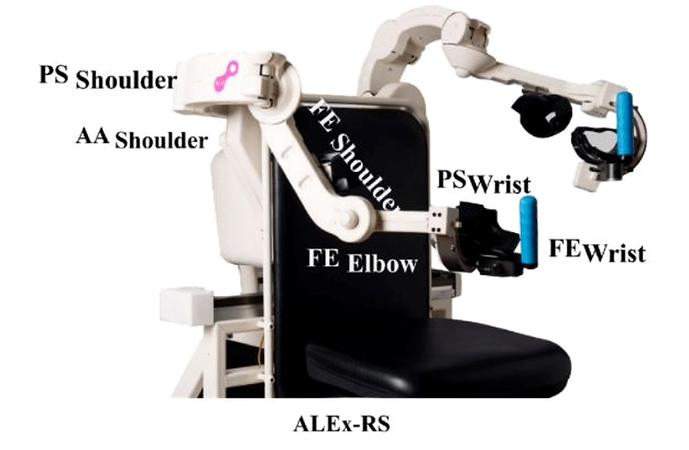

Robotic Mirror Therapy
VR Exergame with a Bimanual Robotic Exoskeleton


Project Information
- Type: Master's Thesis
- Field: Robotics / VR / Haptics
- Institution: Heidelberg University, Germany
- Platform: ALEx-RS
- Technology: Unity / C#
Project Overview
This master's thesis focused on the design and implementation of a robotic mirror-therapy system combining virtual reality, a VR exergame and a bimanual robotic exoskeleton.
The project investigated mirror-based haptic feedback within a virtual-reality rehabilitation environment and evaluated user performance during the developed exergame.
The work was carried out at the ARIES Lab under the supervision of Professor Lorenzo Masia.
Research Lab: ARIES Lab — Lorenzo Masia
My Contribution
- Developed VR exergame components using Unity and C#.
- Implemented the three difficulty levels used in the experimental task.
- Integrated the virtual environment with the robotic exoskeleton.
- Worked with haptic feedback and robotic interaction.
- Conducted experimental evaluation.
- Analysed experimental data.
System
- Bimanual ALEx-RS robotic exoskeleton
- Virtual reality headset
- Unity 3D
- VR exergame
- Haptic feedback
Technical Stack
- Unity 3D
- C#
- Virtual Reality
- MATLAB
- Human-Robot Interaction

Experimental Evaluation
The developed VR exergame was evaluated using different difficulty levels and two haptic-feedback conditions: normal haptic feedback and mirror haptic feedback.
Results
The experimental evaluation compared participant performance between normal and mirror haptic feedback conditions across the different game levels.
The results showed higher mean scores for the mirror-feedback condition across the evaluated levels.